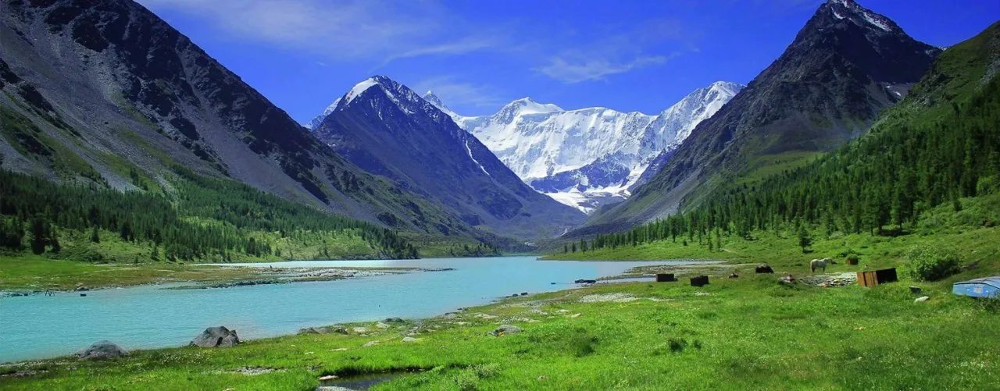
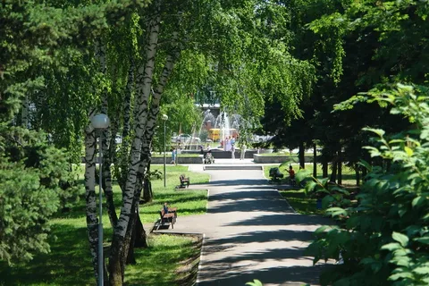

О городе
Алтай — город на востоке Казахстана, известный своими горами, реками и историческими памятниками. Город возник как центр горнодобывающей и лесной промышленности, постепенно превратившись в туристический центр региона.
История
Алтай появился в начале XX века вокруг добычи полезных ископаемых. Город получил официальный статус в середине века. Сегодня Алтай сочетает промышленное наследие с уникальной природой и активной культурной жизнью.
Достопримечательности
-

Горы Алтай - живописные горы, популярные среди туристов, альпинистов и любителей походов.
-

Озеро Алтай - красивое озеро с прозрачной водой, любимое место отдыха жителей и туристов.
-

Городской парк - зелёная зона для прогулок и культурных мероприятий на открытом воздухе.
Культура
Алтай славится своими культурными традициями: здесь проходят этнические фестивали с национальными танцами и музыкой, выставки местных художников и ремесленников. Город активно развивает туристические маршруты, включая исторические экскурсии и мастер-классы по народным промыслам. Местные театры и концертные залы предлагают богатую программу событий для жителей и гостей города.
Интересные факты
- Алтай расположен в живописной горной зоне на востоке Казахстана.
- Город известен туристическими маршрутами и активным отдыхом на природе.
- В Алтае ежегодно проводятся этнические фестивали и выставки ремесел.